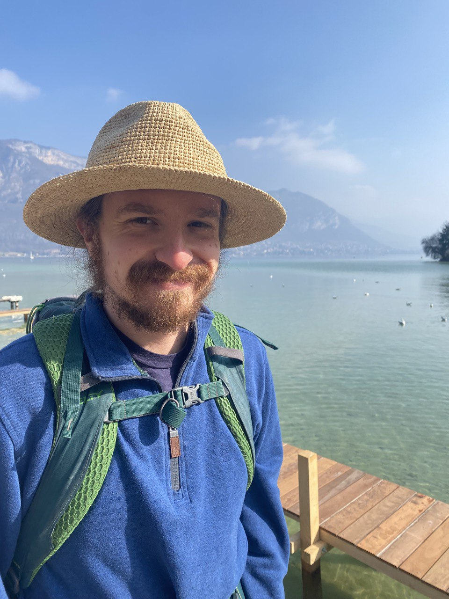

I am a Ph.D. candidate in UCLA's Math department, working with Artem Chernikov. I'm interested in model theory as it relates to combinatorics and other fields. I graduated in 2018 with a B.S. in mathematics from Caltech.
I also teach at the Olga Radko Math Circle.
Feel free to email me at aaronanderson at math.ucla.edu
Most Sundays, I teach high school students at the Olga Radko Math Circle, which I also attended in middle and high school. Here are some of the lessons I've written:
Email me at aaronanderson at math.ucla.edu for solutions.
In the summers of 2021 and 2022, I taught at Canada/USA Mathcamp, which I also attended in high school. Here are problems and notes for some of the classes I taught
Email me at aaronanderson at math.ucla.edu for solutions.
I have been a teaching assistant for the following math classes at UCLA:
In 2019, I assisted at the Curtis Center.
At Caltech, I was a teaching assistant for Ma6a: Discrete Math.